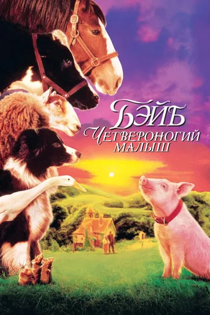

Бэйб: Четвероногий малыш 1995
История о приключениях маленького необыкновенно умного поросенка йоркширской породы. Все животные на ферме Хоггетов имеют ярко выраженную индивидуальность и общаются между собой на человеческом языке. Люди при этом, разумеется, совершенно не в курсе дела. Когда же хозяин начинает что-то подозревать, он сам включается в эту игру, надеясь использовать в хозяйстве вдруг проявившийся интеллект животных. Четвероногий малыш, тот самый поросёнок, воспитанный овчаркой Флай, пытается доказать, что свинья годится не только для украшения рождественского стола (к чему дело как раз и шло), но способна выполнять работу, требующую ума и сообразительности — пасти овец. Можете себе представить, как к этой идее относятся сами овцы! Не говоря об овчарках — какая профессиональная гордость такое выдержит?
Открыть в каталогеДанные и постеры принадлежат их правообладателям. Этот продукт использует TMDB API, но не одобрен и не сертифицирован TMDB.